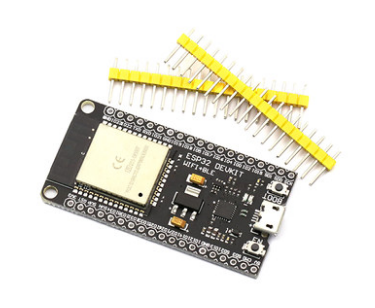
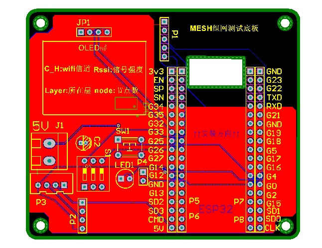
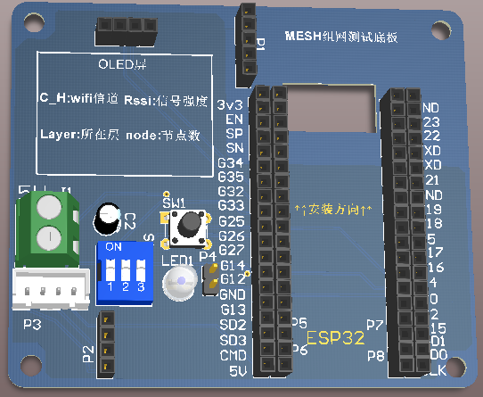
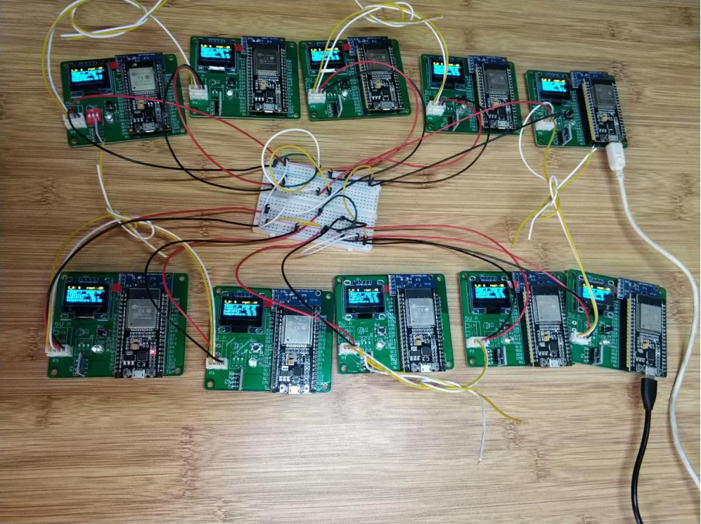

新型智能家居组网方式研究
第八章 新型智能家居组网方式研究
8.1 传统组网方式存在的问题
现阶段智能家居设备大都使用wifi、zigbee的方式进组网，在进行一定市场调查后，我发现一个有趣的现象，对于物联网智能家居的单一产品来说，无不例外都使用的wifi的方式来实现设备联网;对于成套的智能家居系统来说，总控制器与子设备间大都使用的zigbee 方式进行组网。那么这么做的主要原因是什么呢？相对于单个智能家居产品来说，使用wifi方式联网成本更低，联网方式简单，但是有个致命的缺点就是，家用路由器AP连接容量很小，路由器可连接的终端是有限的，这就意味着智能家居设备不能太多。尽管近几年路由器厂商不断的改良，连接量从最初的9个，到现在40个左右，但过多的连接量会导致网络质量下降，影响手机、电脑、平板等移动设备正常上网。对于成套的智能家居系统，终端节点数量是比较多的，使用wifi的方式组网显然是不可取的。使用zigbee的原因在于协调器与节点之间采用2.4G射频传输，节点之间自组网。协调器通过网口、wifi的方式连接到路由器就可以实现广域网的传输通信，路由器只需要挂载一个协调器就能实现整个室内智能家居设备的联网。因此，由于节点间不采用wifi进行传输，与路由器连接需要协调器转化，成本相对较大，且协调器作为核心设备一旦故障，整个与广域网的连接将会中断。
8.2 基于WIFI的MESH 组网技术
对于智能家居来说，我可能更倾向与使用wifi方式来实现组网，因为家用WIFI如今已是很普遍，智能家居设备选用wifi的方式连接路由器上网，相对于zigbee组网来说成本较低，但对于wifi设备来说，我们希望它能实现像zigbee一样终端节点间自组网。自组网的好处在于，终端设备会因所处的位置不同，动态的调整网络结构。设备即可以作为叶子节点，也可作为中间节点、根节点。作为中间节点时，充当路由的角色。作为根节点时，充当局域网网关的角色。因此，引入基于wifi传输的mesh组网技术，来实现wifi设备间自组网。当wifi设备使用mesh进行组网时，根据信号强弱，离路由器最近的wifi设备将被选为根节点，根节点再根据自身AP的覆盖范围，选取距离自己较近的几个设备作为中间节点，同理，中间节点会继续向下延伸，连接跟多的中间节点、子节点。当根节点发生故障时，节点间会发生一轮选举，距路由器距离次之的设备，因此时信号强度最强，会被推选为新的根节点。利用wifi实现mesh组网，根节点作为mesh网络的网关，直接与路由器连接，不需要其他设备转化传输协议，因此，目前来说MESH 组网技术成本相对较低，且最为合理的。
8.3 MESH 组网测试
测试选用乐鑫公司生产的ESP32低功耗、wifi蓝牙二合一模组，作为控制器，外接BH1750光强传感器、oled屏、sht30温湿度传感器，实现对环境温湿度、光照强度采集，显示在OLED屏上。使用乐鑫ESP-MDF开发框架，实现设备间mesh组网，调用TCP/IP功能模块，与后端服务器对接，将温湿度及光照强度传输至云端，并在web页面上进行实时显示。

ESP-MDF是乐鑫基于MESH协议栈开发的组网框架，使用ESP-MDF框架可以快速开发ESP32模组，实现配网、升级、调试控制等功能，内置mesh协议，方便设备间快速组网。
ESP-MDF框架是在linux环境下进行开发的，因此，掌握必要的linux指令是开发的前提，当然，为了方便通常会在windows系统上，通过安装虚拟机系统来搭建linux环境。但虚拟机系统的安装配置也算较为复杂的过程。官网也推荐在windows系统上使用msys2 小型的GNU环境进行开发。使用msys2搭建开发环境，步骤如下：
- 1.在乐鑫官网下载msys2安装包，然后在C盘进行解压。解压完成后打开msys32目录，双击运行“mingw32.exe”文件。
- 2.弹出黑色命令框，即msys2启动成功。接着使用“mkdir”命令在用户目录下创建一个名为“esp”的目录，用来区分管理编译工程。
mkdir –p ~/esp - 3.进入创建的esp目录
cd ~/esp - 4.使用“git”命令下载“esp-mdf”开发框架。
git clone –recursive https://github.com/espressif/esp-mdf.git - 5.进入下载的“esp-mdf”，执行更新命令，确保开发框架克隆完整。
git submodule update –init - 6.设置环境变量。
在C:/msys32/etc/profile.d/ 目录下创建一个新的脚本文件，将其命名为“export_
idf_path.sh”，在脚本中写入如下命令：
export IDF_PATH=”C:/msys32/home/Administrator/esp/esp-mdf” - 7.验证环境变量是否配置成功,若返回路径一致，则配置成功，开发环境搭建完成。
printenv MDF_PATH
接下来只需根据官方手册，按照函数接口说明，按需求编写设计驱动程序，即可实现快速的开发。
测试底板原理图：
为了方便搭建测试电路，设计制作了搭载有光强传感器、温湿度传感器、OLED的测试底板，原理图、PCB如下所示：


8.4 测试结果
设计制作了10块基于ESP32的温湿度、光照强度检测节点，利用mesh组网技术，进行环境数据采集后，上传至后端云服务器。测试设备可以实现自适应组网，在设备运行过程中间歇性的撤掉根节点电源来模拟根节点故障，其他设备依然可以在短时间内重新建立根节点，保证网络链路的通畅。
后端TCP服务器可以正常收到来自mesh网络上传的数据，在对数据进行简单滤波后存入mysql数据库，且数据稳定可靠。
web服务器可以正常从数据库中读取各个测试节点的数据，并将数据分类后以可视化的图表表现出来。
